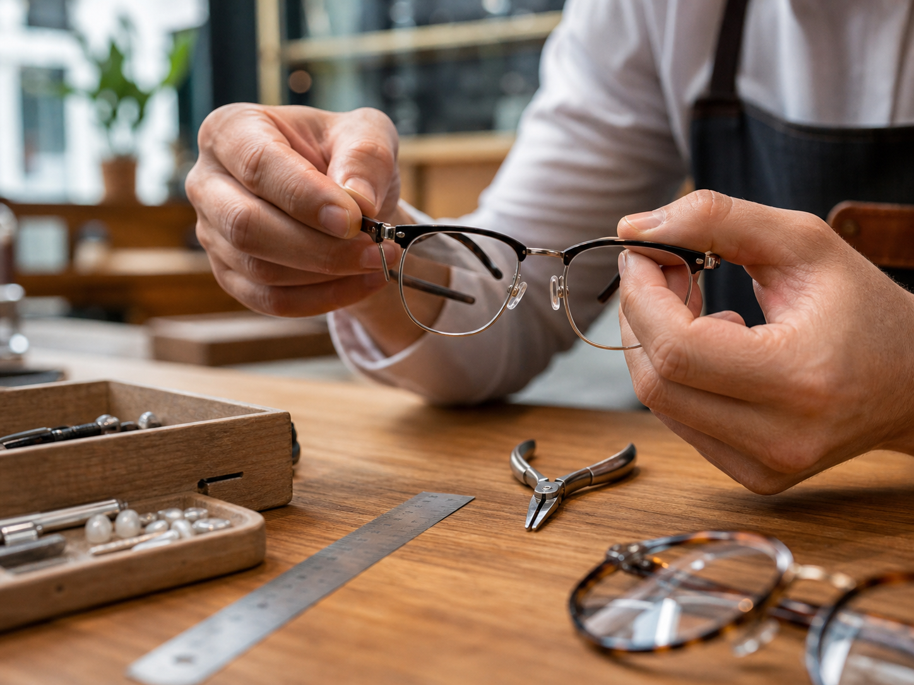
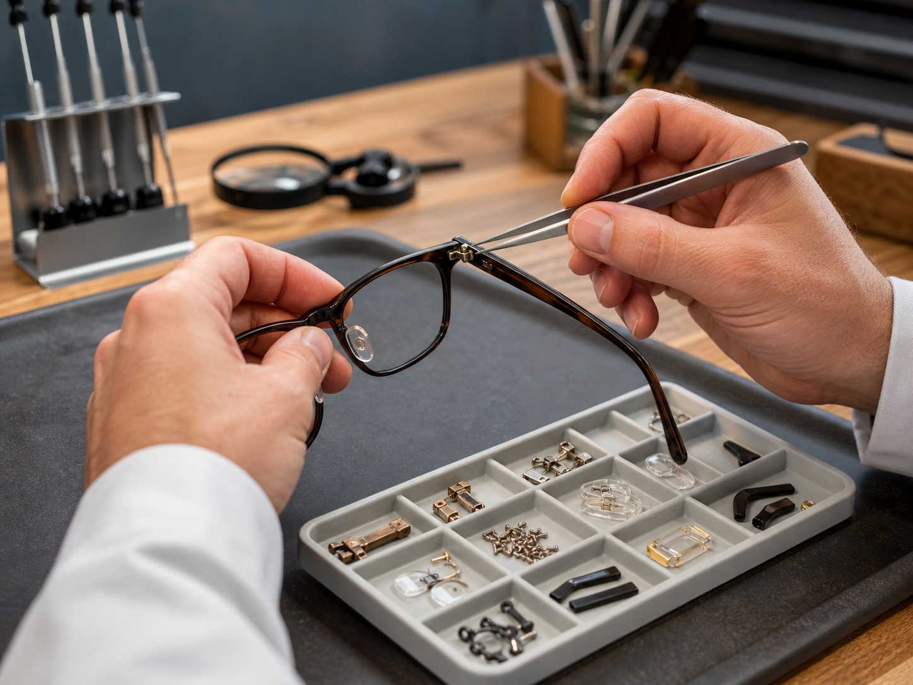
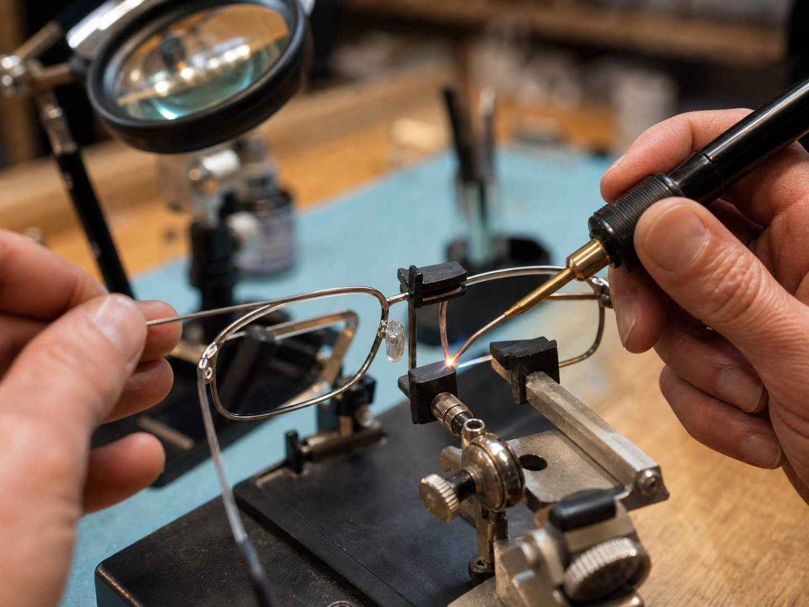
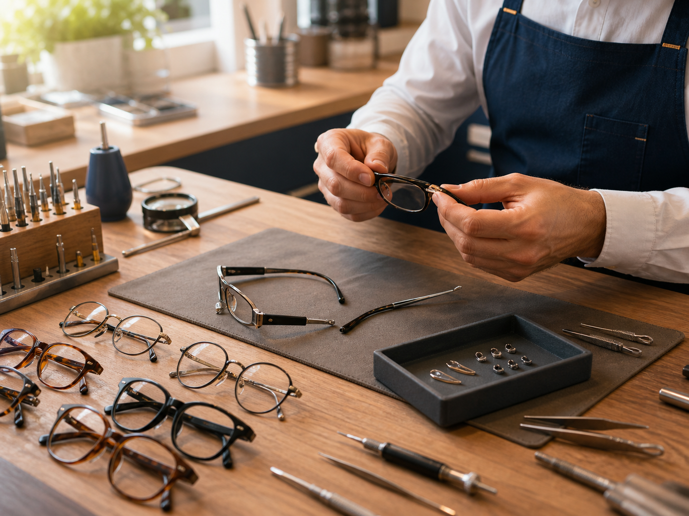

Popravke, podešavanja i precizne intervencije.
Pružamo usluge svih vrsta popravki i servisiranja naočara, bez obzira na tip ili model okvira. Veliki broj popravki rešavamo brzo i efikasno.

Podešavanje i centriranje okvira
Okvir mora da stoji stabilno, ali bez pritiska. Podešavamo širinu, nagib, drškice i položaj na nosu kako bi naočare pratile lice i omogućile prirodan položaj stakala.
- Centriranje okvira prema licu
- Podešavanje drškica i mosta
- Udobnost pri dužem nošenju

Zamena delova
Kada naočare popuste, najčešći uzrok su sitni delovi: šrafovi, nosači, papučice, šarke ili krajevi drškica. Menjamo oštećene i dotrajale delove, proveravamo stabilnost okvira i procenjujemo da li naočare mogu bezbedno da nastave da se koriste.
- Zatezanje i zamena šrafova
- Zamena nosača i silikonskih papučica
- Šarke, krajevi drškica i manji rezervni delovi
- Zamena fleksa na drškici
- Provera stabilnosti okvira nakon intervencije

Varenje i mikrozavarivanje okvira
Metalni okviri traže pažljiv pristup, naročito kada se radi o spojevima, mostu ili drškicama. Radimo mikrozavarivanje titanijumskih okvira i precizne intervencije na osetljivim metalnim delovima. Pre intervencije proveravamo materijal i oštećenje, kako bismo procenili da li popravka može da bude čvrsta, uredna i dugotrajna.
- Varenje spojeva metalnih i titanijumskih okvira
- Precizan rad uz zaštitu stakala
- Savet kada je okvir bolje zameniti

Manje i veće intervencije na naočarima
Neke popravke su gotove brzo, a neke zahtevaju više procene i rada. Zato svake naočare prvo pregledamo, objasnimo šta je moguće i predložimo rešenje koje ima smisla za okvir, stakla i način nošenja.
- Brze intervencije i zatezanje
- Kompleksnije popravke i kombinovane zamene
- Jasan savet pre početka rada